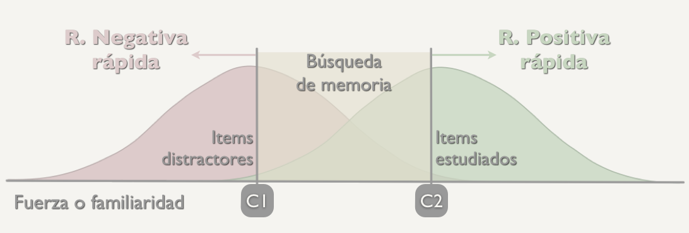

Naturaleza de los procesos de recuperación
Procesos de búsqueda o recolección
En la aplicación anterior de la TDS al reconocimiento se asume que éste tiene lugar gracias a un proceso de acceso directo que permite evaluar el valor de fuerza o familiaridad de la huella y, en función del criterio de decisión adoptado, emitir una respuesta de reconocimiento o no. Pero la investigación ha demostrado que para reconocer se puede necesitar en algunas ocasiones otro tipo de proceso, uno basado en la búsqueda o recolección de información en la memoria, que es más propio de las tareas de recuerdo.
Estas propuestas, que defienden la intervención de dos procesos se las suele conocer como teorías de proceso dual o de doble proceso. Estos procesos son:
- Uno rápido y automático basado en el valor de fuerza o familiaridad
- Otro proceso, lento y demandante de atención, que aporta detalles de la huella del episodio que ayudan al reconocimiento
El primero explica las respuestas rápidas de reconocimiento, mientras que el segundo, las respuestas lentas que a veces nos requiere reconocer.
La presentación de un ítem en la prueba de reconocimiento permite el acceso directo a su representación en memoria y a su valor de fuerza o familiaridad. La decisión del sujeto depende de ese valor de fuerza con respecto al criterio de decisión que apliquemos


Así, si tenemos un criterio bajo y unos valores de fuerza menores a el, nuestra respuesta sería una respuesta negativa rápida. Percibimos que no reconocemos el ítem que nos presentan
Por otro lado si el criterio es alto y nuestros valores de fuerza también lo son la respuesta que daremos es una respuesta positiva rápida. En este caso el ítem es reconocido
El otro caso que puede darse es que los valores de fuerza se encuentren entre los criterios de decisión alto y bajo, es en este punto cuando se dal el proceso lento de búsqueda o recolección
Estas teorías explican la experiencia que con frecuencia podemos tener de “conocer” a alguien y sin embargo, no poder recordar ni cómo se llama. Es decir, por un lado una sensación de familiaridad y por otro lado una experiencia de “recuerdo” a la que podemos, o no, llegar en el momento.
Se han desarrollado diversos procedimientos para diferencias las contribuciones de la familiaridad y de la recolección al reconocimiento. Uno de ellos es el procedimiento utilizado en el paradigma Recordar/Saber, que ya vimos en el tema 1.